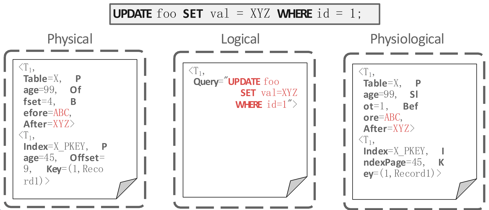

참고한 것들
Log Message Schemes

Physical Logging: Image 단위의 로깅
- Log 에 page ID, offset, old, new value 를 적는 방식.
- 이 방식은 일단 idempotent 하다는 장점이 있다.
- 그냥 전, 후의 “값” 이 저장되기 때문에 rollback (recovery) 시에 그냥 그 값을 copy 만 하면 되고
- Recovery 도중에 crash 가 나도 별 문제가 없게 된다.
- 하지만 단점은 생성되는 log 의 양이 많다는 것이다.
- 보통 하나의 tx 는 여러 값들을 수정하게 되는데, 이 변경된 data 들의 위치들이 다 logging 되기 때문.
- 가령
INSERTquery 의 경우에도 Index 를 고치고 table size 를 늘리는 등의 여러 작업들을 하는데, 이들을 변경된 데이터 별로 다 log 가 남게 되니 그 양이 매우 큰것.
- 가령
- 보통 하나의 tx 는 여러 값들을 수정하게 되는데, 이 변경된 data 들의 위치들이 다 logging 되기 때문.
Logical Logging: Operation 단위의 로깅
- 변경 내용에 대한 operation 을 로깅하는 방법이다.
- UNDO log 시에는 반대 operation 을 적는다 (가령
INSERT는DELETE로 바꾸는 등).
- UNDO log 시에는 반대 operation 을 적는다 (가령
- 따라서 operation 하나당 하나의 log 가 생성되니까 당연히 Physical logging 보다는 생성되는 log 의 사이즈가 적지만,
- Rollback (Recovery) 가 복잡해 진다.
- Physical logging 에서는 그냥 logging 된 데이터를 복사만 하면 됐지만
- Logical logging 에서는 해당 operation 들에서 어떤 작업을 했는지, 그리고 어떤 데이터들이 변경되었는지를 recovery 시에 replay 하면서 알아내야 하기 때문.
Physical + Logical Logging
- Physical logging 에서는 빠른 복구의 장점과 많은 저장 공간의 단점이 있었고
- Logical logging 에서는 적은 저장 공간의 장점과 느린 복구의 단점이 있었기 때문에
- 이 둘의 장점을 취한 방법이 Physical + Logical Logging, 즉 Physiological Logging 이다.
- 이놈은 physical 에다가 indirection 한번 씌운것이라고 생각하면 된다.
- physical 의 경우에는 page offset 이 적히지만 physiological 은 이거 대신 slot # 를 적는다.
- Index page 의 경우에는 key 를 적는다.
- 이렇게 하면 page 내에서의 위치는 바뀌어도 영향이 없기 때문.
- 이 방식을 제일 많이 쓴다.